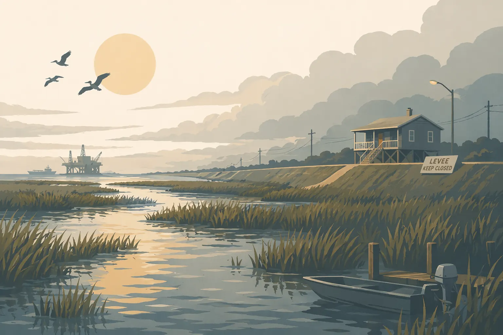
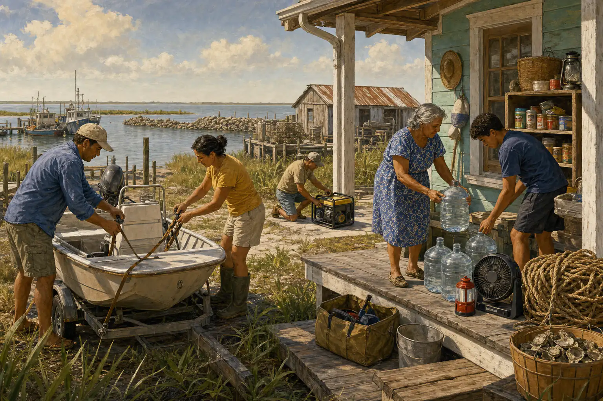
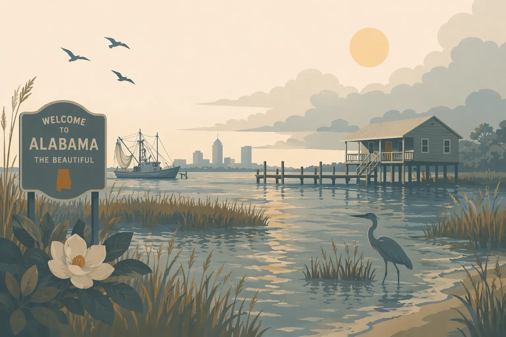
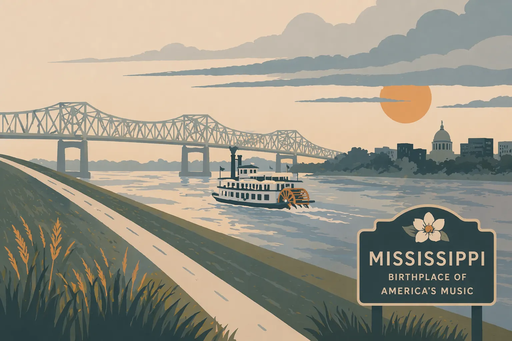

Florida
Marejada ciclónica, intensificación rápida y una península donde una sola tormenta puede afectar múltiples costas.
Empiece aquí si la geografía es lo primero. Cada guía cubre lo específico de su costa: el riesgo local, qué cambia del kit estándar y qué agencias guardar en favoritos antes de la temporada.
Estas no son páginas de perfil de todos los estados. Son guías costeras prácticas organizadas en torno a los lugares donde la planificación ante huracanes realmente cambia: geografía, patrones de evacuación, riesgo de inundación y las agencias que debe conocer antes de que haya una tormenta en el mapa.
Marejada ciclónica, intensificación rápida y una península donde una sola tormenta puede afectar múltiples costas.

Una larga costa en el Golfo, riesgo de inundaciones en el interior y realidades de evacuación muy distintas entre Houston y el Valle.

Pérdida de tierras, drenaje lento y una de las costas estructuralmente más vulnerables de América del Norte.

Lo que comparten Texas y Florida: apagones en clima caluroso, exposición a la marejada ciclónica y largos períodos de recuperación.

Evacuaciones de los Outer Banks, marejada ciclónica costera e inundaciones en el interior causadas por tormentas que siguen avanzando después del toque de tierra.

Riesgo de marejada en las Golden Isles, exposición al viento costero y remanentes tropicales que siguen siendo importantes mucho más adentro del territorio.

Una costa corta con una seria exposición a la marejada ciclónica en la Bahía de Mobile y riesgo de inundaciones que se extiende mucho más allá de la playa.

Una costa definida por el historial de marejada del Katrina e inundaciones en el interior causadas por tormentas del Golfo que no terminan en la orilla.

Logística insular, fragilidad de la red eléctrica y planificación de suministros para un lugar al que no se puede llegar por carretera.
Apoyar este sitio
Sin anuncios. Sin enlaces de afiliados. Si esto hizo más clara su preparación ante huracanes, puede ayudar a mantener el sitio gratuito y actualizado.